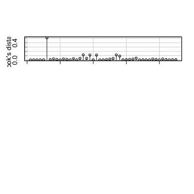
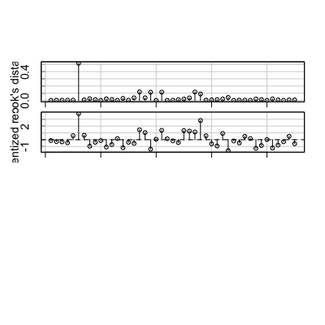
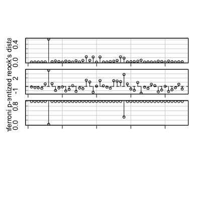
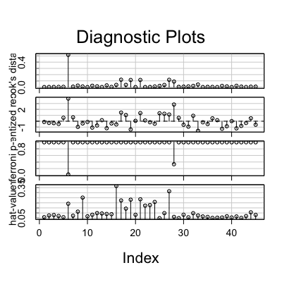

infIndexPlot(model, ...) influenceIndexPlot(model, ...) infIndexPlot(model, vars = c("Cook", "Studentized", "Bonf", "hat"), main = "Diagnostic Plots", labels, id.method = "y", id.n = if (id.method[1] == "identify") Inf else 0, id.cex = 1, id.col = palette()[1], grid = TRUE, ...)
lm or glm."Cook"
for Cook's distances, "Studentized" for Studentized
residuals, "Bonf" for Bonferroni p-values for an outlier test, and
and "hat" for hat-values (or leverages). Capitalization is optional.
All may be abbreviated by the first one or more letters.
id.n=0 for labeling no points. See
showLabels for details of these arguments.
plotProvides index plots of Cook's distances, leverages, Studentized residuals, and outlier significance levels for a regression object.
Used for its side effect of producing a graph. Produces four index plots of Cook's distance, Studentized Residuals, the corresponding Bonferroni p-values for outlier tests, and leverages.
Cook, R. D. and Weisberg, S. (1999) Applied Regression, Including Computing and Graphics. Wiley.
Fox, J. (2008) Applied Regression Analysis and Generalized Linear Models, Second Edition. Sage.
Fox, J. and Weisberg, S. (2011) An R Companion to Applied Regression, Second Edition, Sage.
Weisberg, S. (2005) Applied Linear Regression, Third Edition. Wiley.
Warning message: NAs introduced by coercion



cooks.distance, rstudent,
outlierTest, hatvalues